4.5 AI智慧助教¶
大家可以通过链接：https://www.coze.cn/s/PPw_GEKGIus/ 访问：
AI智慧助教是针对老师对学生提问的回答精准性不足，生成的内容、批改的质量不高，时常过于简略。智能助教作为教育行业的创新应用，具有广泛的潜在场景需求，其核心优势在于利用大模型能力，自动化、智能化和高效服务学生学习场景，减轻教师工作量，增加学生学习效率。重复性工作的生成提效，例如教案写作、备课准备、作业批改场景，智慧助教的流程如下所示：
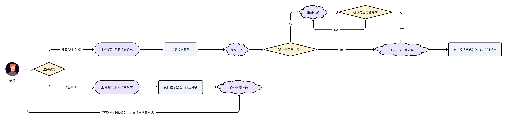
该智能体包含两个工作流，分别是：
- 生成讲义的工作流
| 模块 | 实现方式 |
|---|---|
| 生成大纲 | 通过用户描述或输入的资料，收集相关信息，并生成大纲。如果用户对大纲不满意，支持重新生成大纲，直到大纲符合用户需求。 其中生成大纲由模型节点完成，重新生成大纲的步骤由循环节点完成。循环节点中会持续生成大纲，直到得到用户认可才会终止循环。用户提出的修改意见，也会通过分支直接输入到重试流程中。 |
| 生成课件或教案内容 | 调用插件在公开平台中搜索相关的资料，并结合资料和大纲，生成课件或教案内容。 其中，搜索资料和生成文章的功能均通过循环节点实现，生成文章时循环节点可以依次生成大纲中每个模块的具体段落，扩写效果比单个大模型节点更好。 |
| 输出课件或教案的文件 | 通过问答节点引导用户选择文章的保存格式，通过代码节点将文件内容格式化后，调用插件节点生成文件即可。 |
- 批改作业的工作流：
| 模块 | 实现方式 |
|---|---|
| 读取作业内容 | 支持用户上传文件或图片，工作流通过插件节点识别并读取用户输入的文件或图片，并通过消息节点展示给用户。将这些信息提供给大模型节点进行信息整理与汇总。 代码的节点的作用是为了兼容链接、图片读取失败的异常处理，并在异常时返回“读取错误”的信息。 |
| 批改作业 | 通过循环节点批改作业。循环节点中包含批改作业的模型节点及输出评语的消息节点。 |
一、智能体构建¶
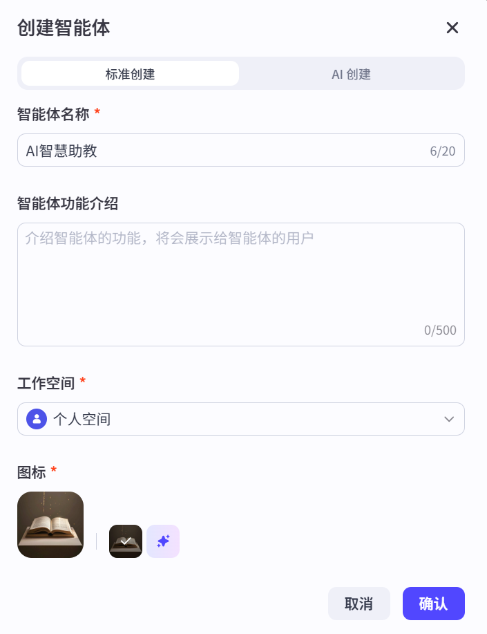
二、讲义生成工作流¶
整个工作流如下所示：
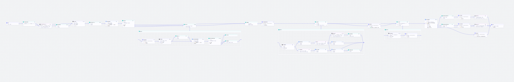
我们分成以下6部分进行说明：
1 输入信息¶
该流程由三个节点构成。“判断是否有文件” 节点作为选择器，基于开始节点 的 “file” 输出内容，按特定操作符和逻辑关系判断条件以控制流程走向；“LinkReaderPlugin” 节点是数据获取工具，根据开始节点 的 “file” 作为 url 及配置参数获取网页、pdf 等内容，能输出错误信息或结构化数据；“兼容异常处理” 节点接收“LinkReaderPlugin” 的 “data” 数据，检查数据存在与否并分别进行封装返回或返回错误提示，实现数据的异常处理与格式化输出。
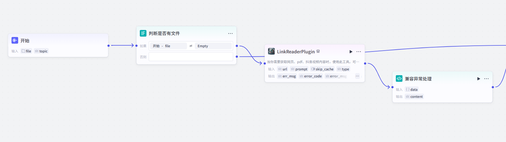
- 判断是否有文件：这是一个选择器类型的节点。它连接多个下游分支，通过设定的条件（来决定运行哪个下游分支。若设定条件成立，则仅运行对应的分支；若所有条件均不成立，则只运行 “否则” 分支，实现对流程走向的控制。
- LinkReaderPlugin：这是一个用于获取网页、pdf、抖音视频内容的工具节点。通过调用相关 API（具体由设置的 apiID、apiName、pluginID 等参数确定），根据传入的 url，来获取目标链接下的标题和内容等信息。如果在获取过程中出现错误，能够输出错误信息、错误码等内容，同时正常情况下会输出网页内容相关的数据（如 content、title 等）。
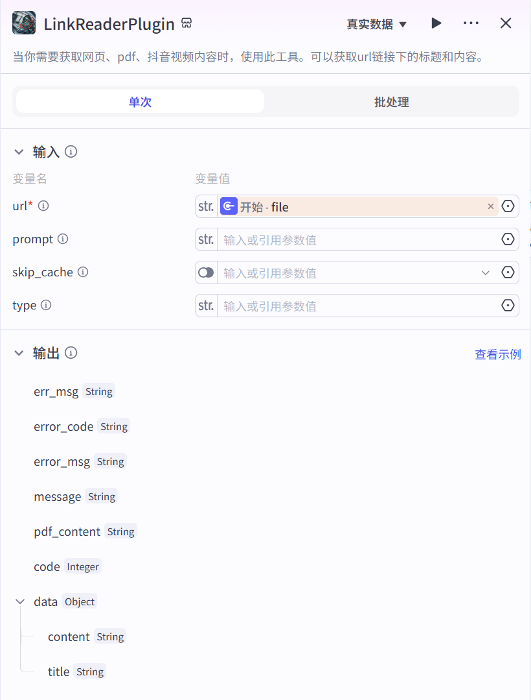
- 兼容异常处理：这是一个代码类型的节点。用于处理上一节点（LinkReaderPlugin）的输出数据。节点内的 Python 代码会对输入数据进行检查，若数据存在，则将其封装在返回对象的 “content” 字段中返回；若数据为空，则返回提示信息 “内容获取失败”。该节点的主要作用是对数据进行异常处理和格式化输出，确保后续流程获得的数据是符合预期格式或包含明确的错误提示 。
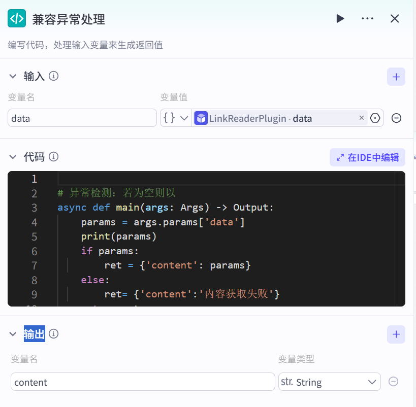
代码的主要内容是：
# 定义一个异步函数main，接收参数args，其类型为Args
# 函数返回值的类型为Output
async def main(args: Args) -> Output:
# 从传入的参数args中提取params字典中的'data'字段的值
# 并将其赋值给变量params
params = args.params['data']
# 检查params是否为真（即不为空）
if params:
# 如果params不为空，创建一个字典ret，其中'content'字段的值为params
ret = {'content': params}
else:
# 如果params为空，创建一个字典ret，其中'content'字段的值为提示信息'内容获取失败'
ret= {'content':'内容获取失败'}
# 返回字典ret
return ret
2 大纲生成¶
该部分包含四个节点：生成大纲节点调用模型生成课件或教案大纲，输出可读的 string 节点将大纲内容列表转为字符串，大纲是否满意节点向用户展示大纲并收集反馈，意图识别节点对反馈进行分析以判断用户对大纲的态度
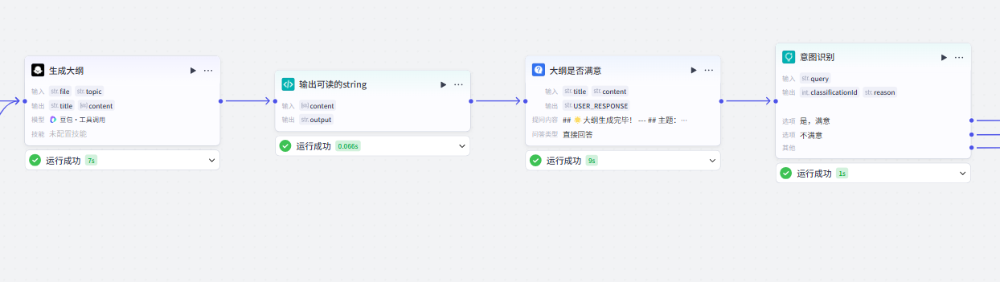
- 生成大纲：该节点调用 “豆包・Function call 模型” 这一大语言模型。通过设置如温度为 1、topP 为 0.7、最大令牌数为 1024 等模型参数，依据系统提示词（要求作为课件 / 教案写作大师，根据提供的主题和内容，以 JSON 格式输出标题和内容大纲，且大纲内容以 markdown 结构输出，每个分段在数组字段中）来生成课件或教案的标题和内容大纲，输出 “title” 和 “content”。
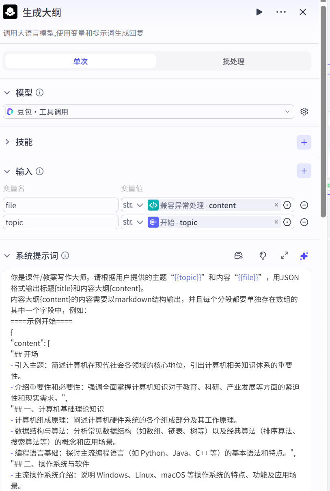
提示词是：
你是课件/教案写作大师。请根据用户提供的主题“{{topic}}”和内容“{{file}}”，用JSON格式输出标题{title}和内容大纲{content}。
内容大纲{content}的内容需要以markdown结构输出，并且每个分段都要单独存在数组的其中一个字段中，例如：
====示例开始====
{
"content": [
"## 开场
- 引入主题：简述计算机在现代社会各领域的核心地位，引出计算机相关知识体系的重要性。
- 介绍重要性和必要性：强调全面掌握计算机知识对于教育、科研、产业发展等方面的紧迫性和现实需求。",
"## 一、计算机基础理论知识
- 计算机组成原理：阐述计算机硬件系统的各个组成部分及其工作原理。
- 数据结构与算法：分析常见数据结构（如数组、链表、树等）以及经典算法（排序算法、搜索算法等）的概念和应用场景。
- 编程语言基础：探讨主流编程语言（如 Python、Java、C++ 等）的基本语法和特点。",
"## 二、操作系统与软件
- 主流操作系统介绍：说明 Windows、Linux、macOS 等操作系统的特点、功能及应用场景。
- 系统软件与应用软件：分析系统软件（如驱动程序、编译器等）和应用软件（办公软件、图像处理软件等）的区别与联系。",
"## 三、计算机网络技术
- 网络架构与拓扑结构：讲解计算机网络的层次结构（如 OSI 模型、TCP/IP 模型）以及不同拓扑结构（总线型、星型、环型等）的特点。
- 网络通信协议：探讨常见网络协议（如 HTTP、FTP、TCP、UDP 等）的工作原理和应用。
- 网络安全基础：介绍网络安全的重要性以及常见的网络安全威胁（如黑客攻击、病毒感染等）和防范措施。",
"## 四、数据库管理系统
- 数据库基本概念：阐述数据库、数据表、字段、记录等基本概念。
- 关系型数据库与非关系型数据库：分析两者的特点、适用场景以及常见的数据库管理系统（如 MySQL、Oracle、MongoDB 等）。
- 数据库设计与操作：讲解数据库设计的步骤和方法，以及如何使用 SQL 语句进行数据的增删改查操作。",
"## 五、人工智能与机器学习基础
- 人工智能概述：介绍人工智能的发展历程、主要研究领域（如自然语言处理、计算机视觉等）和应用场景。
- 机器学习算法：探讨常见的机器学习算法（如监督学习、无监督学习、深度学习等）的原理和应用。
- 人工智能框架：分析主流人工智能框架（如 TensorFlow、PyTorch 等）的特点和使用方法。",
"## 六、计算机在各行业的应用
- 金融领域：阐述计算机在银行系统、证券交易、风险管理等方面的应用。
- 医疗领域：分析计算机在医疗影像诊断、电子病历管理、远程医疗等方面的作用。
- 教育领域：介绍计算机在在线教育平台、智能教学工具等方面的应用。",
"## 七、计算机技术的发展趋势
- 新兴技术展望：探讨未来计算机技术的发展方向，如量子计算、物联网、区块链等技术的潜在影响。
- 对社会和行业的影响：分析计算机技术发展对社会结构、就业市场、产业变革等方面的影响和挑战。",
"## 结束语
- 重要性的再次强调：总结计算机知识体系在现代社会中的重要意义。
- 鼓励学习与创新：激励学生积极学习和探索计算机领域的新知识、新技术，培养创新思维和实践能力。"
],
"title": "计算机相关知识体系概述"
}
====示例结束====
## 限制
1. 大纲的正文需要包含中文序列号，如“一、”“二、”“三、”等
- 输出可读的 string：此代码类型节点接收来自节点 生成大纲 输出的 “content” 列表数据。代码先检查输入的 “content” 是否为数组，若是则将数组中的字符串元素用换行符连接成一个单独的字符串，最后将这个连接后的字符串以 “output” 为键封装在一个对象中返回，实现将列表数据转换为单个可读字符串的功能。
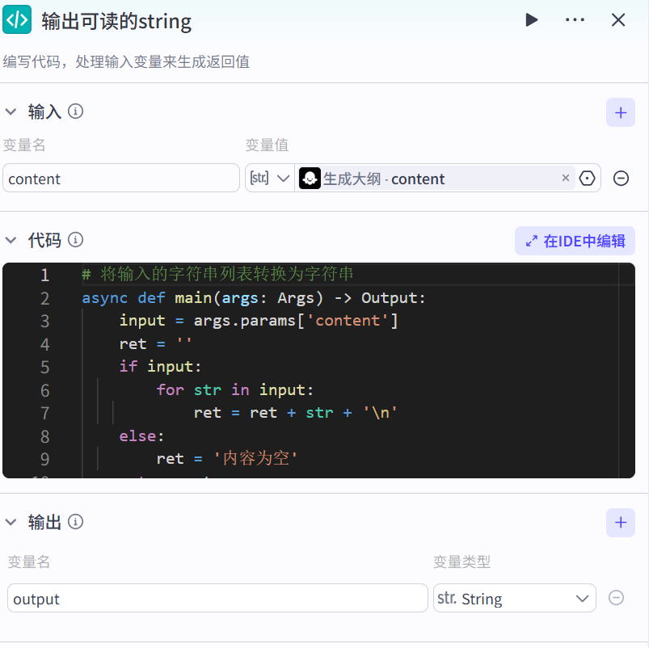
# 异步函数，函数名为main，接受参数args，类型为Args，返回值类型为Output
async def main(args: Args) -> Output:
# 从传入的参数args的params字典中获取键为'content'的值，赋值给input变量
# 这里预期'content'对应的值是一个字符串列表
input = args.params['content']
# 初始化一个空字符串ret，用于存储最终转换后的字符串
ret = ''
# 判断input是否有值（不为空）
if input:
# 遍历input列表中的每个字符串元素
for str in input:
# 将当前字符串元素str连接到ret后面，并添加一个换行符'\n'
ret = ret + str + '\n'
else:
# 如果input为空，则将ret赋值为'内容为空'
ret = '内容为空'
# 返回最终转换后的字符串ret
return ret
- 大纲是否满意：这是一个问答类型节点，支持中间向用户提问，可进行预置选项提问和开放式问题提问。它接收来自生成大纲节点 输出的 “title” 以及来自上一节点 输出的 “output” 作为输入参数，向用户展示生成的大纲主题和内容，并询问用户是否满意，若不满意欢迎提出修改意见。该节点限制提问次数为 3 次，获取用户本轮对话输入内容并输出为 “USER_RESPONSE”。
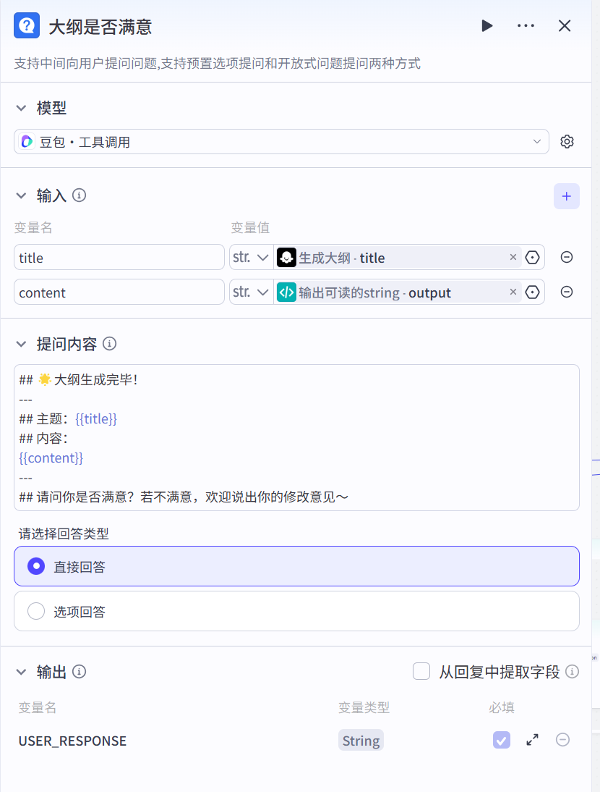
- 意图识别：该节点用于对用户输入内容进行意图识别。接收来自上一 输出的 “USER_RESPONSE” 作为输入参数，调用 “豆包・工具调用” 模型，根据设置的模型参数，将用户输入与预设的意图选项 “是，满意” 和 “不满意” 进行匹配，输出意图分类 ID（classificationId）和意图匹配的原因（reason），以此判断用户对大纲的满意情况。
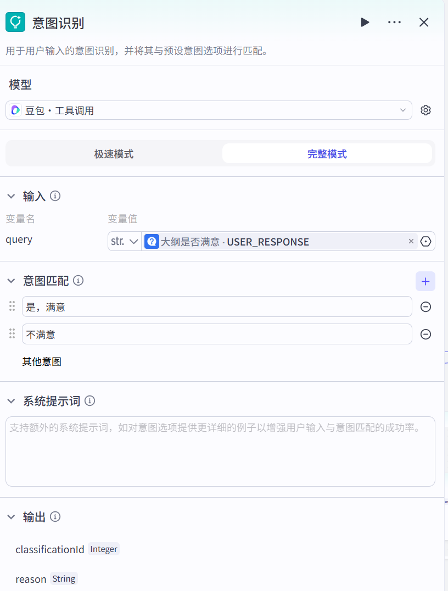
3 大纲重写¶
当用户不满意上一章节生成的大纲，则进入看流程对大纲进行重写，重写大纲节点设定 10 次无限循环，提供变量给后续节点；是否对重写结果满意节点展示重写内容并收集用户反馈；终止循环节点可中断循环；判断对结果是否满意节点识别用户反馈意图；文章重写节点依用户意见和给定信息调用模型改写大纲；设置变量节点重置循环变量值；转换 string 节点处理字符串列表为单个字符串；大纲重写中节点非流式输出重写状态提示。
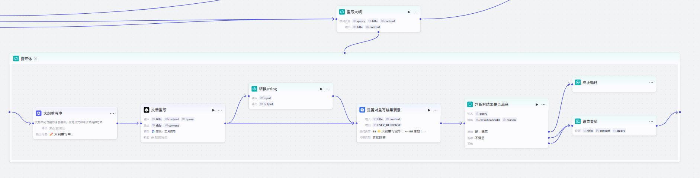
以下是对每个节点作用的依次介绍：
- 重写大纲：这是一个循环类型的节点，设定循环次数为10次，循环类型为无限循环。它接收来自节点意图识别输出的“USER_RESPONSE”作为“query”变量，来自节点生成大纲输出的“title”作为“title”变量，以及来自节点生成大纲输出的“content”列表作为“content”变量。在每次循环中，这些变量被传递到相关后续节点，实现按设定逻辑重复执行一系列任务，并输出更新后的“title”和“content”。
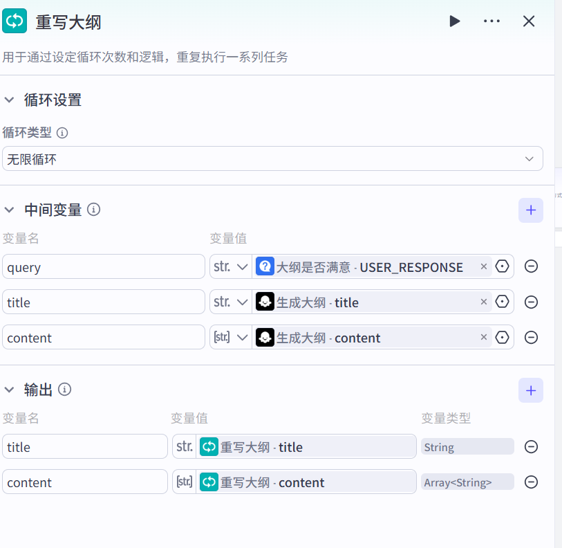
- 大纲重写中：这是一个输出类型的节点，支持中间过程的消息输出，有流式和非流式两种方式。当前设置为非流式输出，输出固定的提示信息“✏️ 大纲重写中...”，用于在流程执行过程中向用户或相关系统展示当前处于大纲重写的状态信息。
- 文章重写：此节点调用“豆包·Function call模型”，接收来自节点重写节点输出的“title”、“content”以及“query”作为输入参数。依据系统提示词（要求作为课件/教案改写大师，根据用户提供的主题、内容、改写意见，以JSON格式输出改写后的标题和内容大纲，且大纲内容以markdown结构输出，每个分段在数组字段中）来生成改写后的课件或教案的标题和内容大纲，输出“title”和“content”。
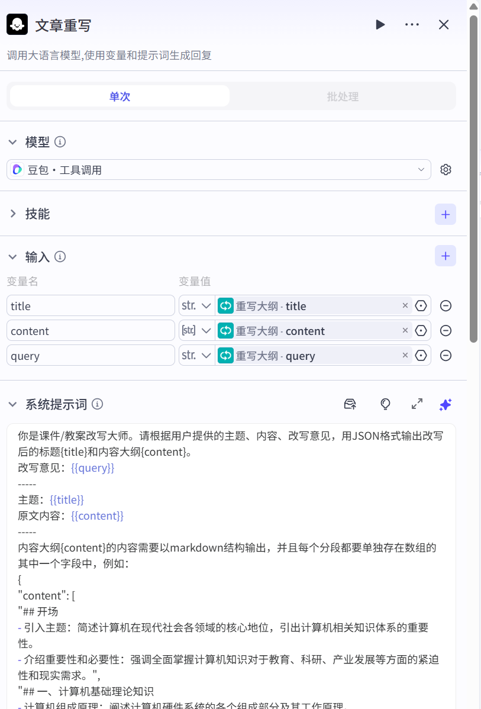
提示词：
是课件/教案改写大师。请根据用户提供的主题、内容、改写意见，用JSON格式输出改写后的标题{title}和内容大纲{content}。
改写意见：{{query}}
-----
主题：{{title}}
原文内容：{{content}}
-----
内容大纲{content}的内容需要以markdown结构输出，并且每个分段都要单独存在数组的其中一个字段中，例如：
{
"content": [
"## 开场
- 引入主题：简述计算机在现代社会各领域的核心地位，引出计算机相关知识体系的重要性。
- 介绍重要性和必要性：强调全面掌握计算机知识对于教育、科研、产业发展等方面的紧迫性和现实需求。",
"## 一、计算机基础理论知识
- 计算机组成原理：阐述计算机硬件系统的各个组成部分及其工作原理。
- 数据结构与算法：分析常见数据结构（如数组、链表、树等）以及经典算法（排序算法、搜索算法等）的概念和应用场景。
- 编程语言基础：探讨主流编程语言（如 Python、Java、C++ 等）的基本语法和特点。",
"## 二、操作系统与软件
- 主流操作系统介绍：说明 Windows、Linux、macOS 等操作系统的特点、功能及应用场景。
- 系统软件与应用软件：分析系统软件（如驱动程序、编译器等）和应用软件（办公软件、图像处理软件等）的区别与联系。",
"## 三、计算机网络技术
- 网络架构与拓扑结构：讲解计算机网络的层次结构（如 OSI 模型、TCP/IP 模型）以及不同拓扑结构（总线型、星型、环型等）的特点。
- 网络通信协议：探讨常见网络协议（如 HTTP、FTP、TCP、UDP 等）的工作原理和应用。
- 网络安全基础：介绍网络安全的重要性以及常见的网络安全威胁（如黑客攻击、病毒感染等）和防范措施。",
"## 四、数据库管理系统
- 数据库基本概念：阐述数据库、数据表、字段、记录等基本概念。
- 关系型数据库与非关系型数据库：分析两者的特点、适用场景以及常见的数据库管理系统（如 MySQL、Oracle、MongoDB 等）。
- 数据库设计与操作：讲解数据库设计的步骤和方法，以及如何使用 SQL 语句进行数据的增删改查操作。",
"## 五、人工智能与机器学习基础
- 人工智能概述：介绍人工智能的发展历程、主要研究领域（如自然语言处理、计算机视觉等）和应用场景。
- 机器学习算法：探讨常见的机器学习算法（如监督学习、无监督学习、深度学习等）的原理和应用。
- 人工智能框架：分析主流人工智能框架（如 TensorFlow、PyTorch 等）的特点和使用方法。",
"## 六、计算机在各行业的应用
- 金融领域：阐述计算机在银行系统、证券交易、风险管理等方面的应用。
- 医疗领域：分析计算机在医疗影像诊断、电子病历管理、远程医疗等方面的作用。
- 教育领域：介绍计算机在在线教育平台、智能教学工具等方面的应用。",
"## 七、计算机技术的发展趋势
- 新兴技术展望：探讨未来计算机技术的发展方向，如量子计算、物联网、区块链等技术的潜在影响。
- 对社会和行业的影响：分析计算机技术发展对社会结构、就业市场、产业变革等方面的影响和挑战。",
"## 结束语
- 重要性的再次强调：总结计算机知识体系在现代社会中的重要意义。
- 鼓励学习与创新：激励学生积极学习和探索计算机领域的新知识、新技术，培养创新思维和实践能力。"
],
"title": "计算机相关知识体系概述"
}
- 转换string：这是一个代码类型的节点，接收来自节点文章重写输出的“content”列表数据作为输入参数。通过运行节点内的Python代码，将输入的字符串列表连接成一个字符串，元素间添加换行符，若列表为空则返回“内容为空”的提示信息，最后输出处理后的字符串“output”。
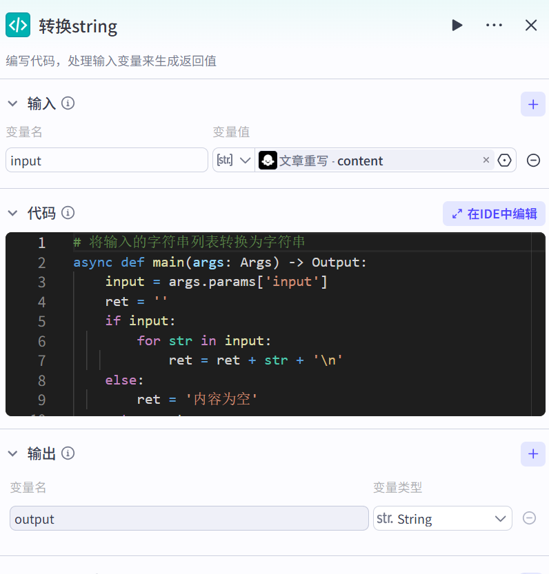
- 是否对重写结果满意：这是一个问答类型的节点，调用“豆包·Function call模型”。它接收来自节点文章重写输出的“title”和来自节点1转换为string输出的“output”作为输入参数，向用户展示重写后的大纲主题和内容，询问用户对重写结果是否满意，若不满意欢迎用户提出修改意见。该节点限制提问次数为3次，并输出用户本轮对话输入内容“USER_RESPONSE”。
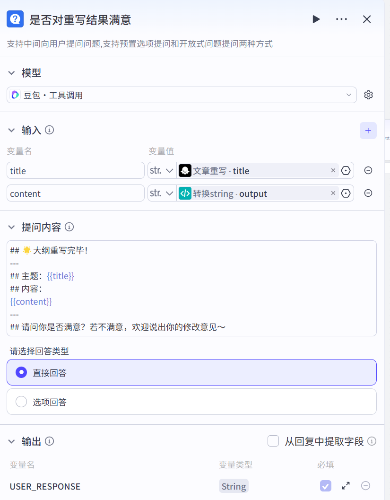
-
判断对结果是否满意：这是一个意图识别类型的节点，调用“豆包·工具调用”模型。它接收来自节点170162输出的“USER_RESPONSE”作为输入参数，将用户输入的内容与预设的意图选项“是，满意”和“不满意”进行匹配，输出意图分类ID（classificationId）和意图匹配的原因（reason），以此判断用户对大纲重写结果的态度。
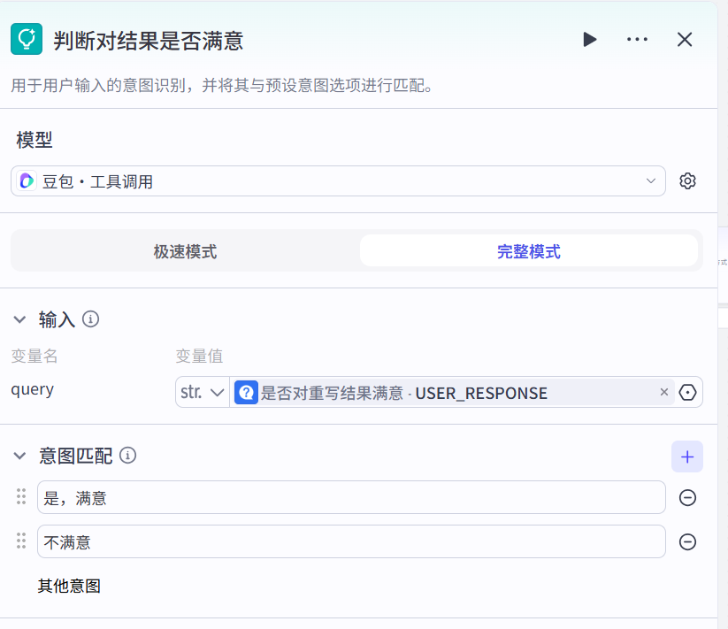
- 设置变量：该节点用于重置循环变量的值，它将来自节点
重写大纲输出的“title”、“content”和来自节点是否对重写结果满意输出的“USER_RESPONSE”分别进行处理，使这些变量在下次循环中使用重置后的值，确保循环过程中变量的更新和一致性。
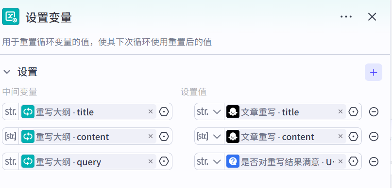
- 终止循环：该节点用于在特定情况下立即终止当前所在的循环，使流程跳出循环体，结束循环相关的操作。
4 资料检索¶
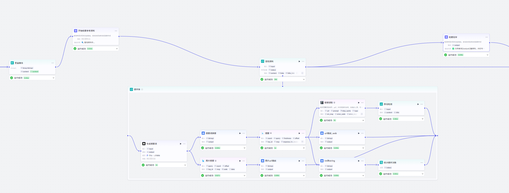
以下是对每个节点作用、输入和输出的介绍：
- 变量聚合：对多个分支的输出进行聚合处理的节点。输入是来自节点重写大纲输出的“content”和来自节点生成大纲输出的“content”，合并到“Group1”组中。输出为一个包含合并后数据的字符串列表“Group1” ，实现对不同分支输出数据的聚合。
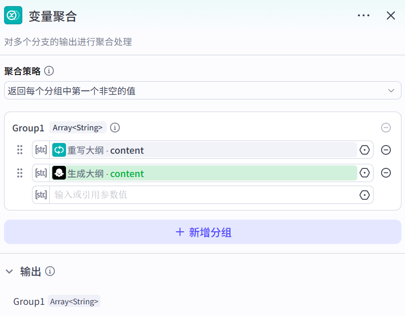
- 开始检索参考资料：输出类型节点，非流式输出。无输入参数，输出固定的提示信息“🔍 查找资料中...”，用于在流程中展示当前处于查找资料的状态。
- 查找资料：循环类型节点，循环次数为10次，循环类型为数组循环。输入是来自节点变量聚合输出的“Group1”字符串列表，作为“input”变量。输出包括来自节点异常检测输出的“content”、来自节点url输出web输出的“output”作为“links”、来自节点异常检测输出的“title”作为“title_link”、自身输出的“index1”作为“index2”、来自节点图片url输出的“output”作为“image”。主要作用是按设定逻辑重复执行一系列任务，为后续节点提供相关数据。
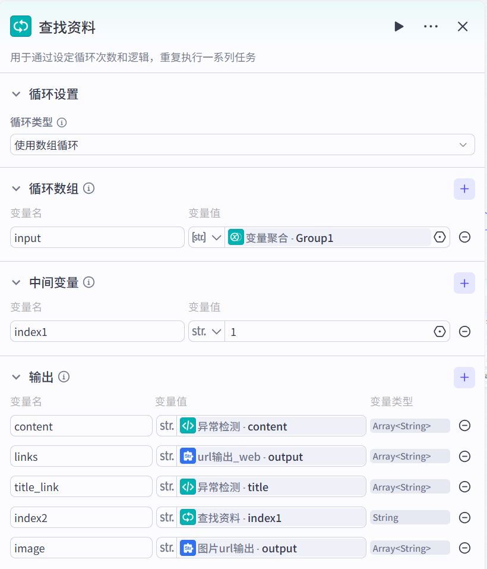
- 生成搜索词：调用“豆包·Function call模型”的大模型节点。输入为来自节点查找资料输出的“input”字符串。输出为一个字符串“output”，其作用是根据输入内容拆分出一个搜索词。
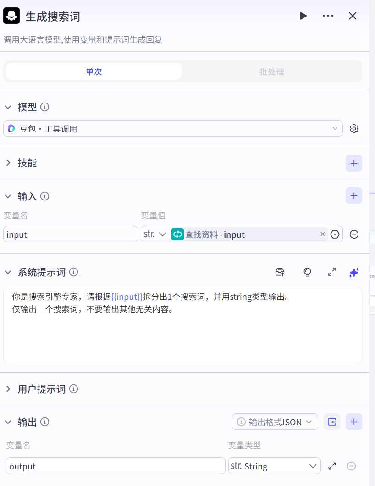
- 搜索词拼接：文本处理类型节点。输入是来自节点生成搜索词输出的“output”字符串作为“String1”。输出为一个字符串“output”，通过将输入字符串与固定字符串“ filetype:pdf”拼接，处理字符串格式。
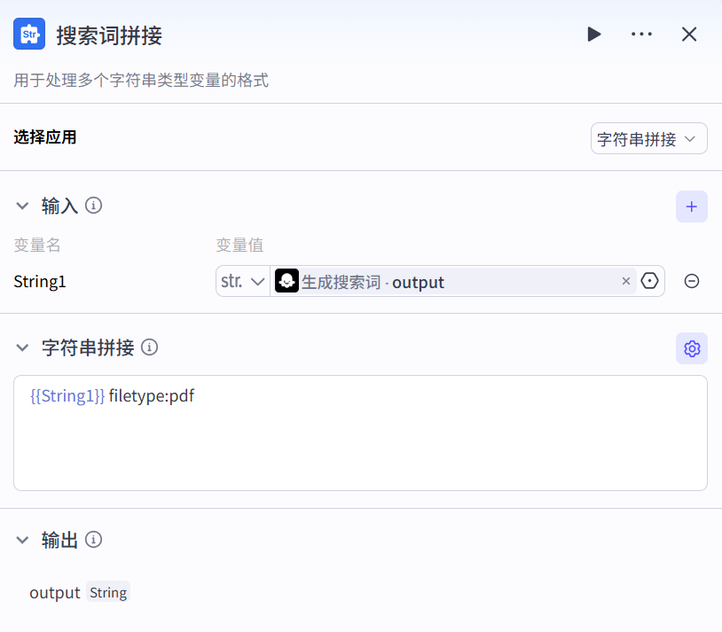
- 搜索：必应搜索引擎相关的节点。输入包括设置的api相关参数，以及来自节点搜索词拼接输出的“output”作为搜索“query”，并设置了搜索结果数量“count”为1。输出包括“log_id”、“msg”、“response_for_model”、“code”、“data”（包含搜索结果的相关信息如网页信息、图片信息等），用于根据输入的搜索词进行必应搜索并返回搜索结果相关数据。
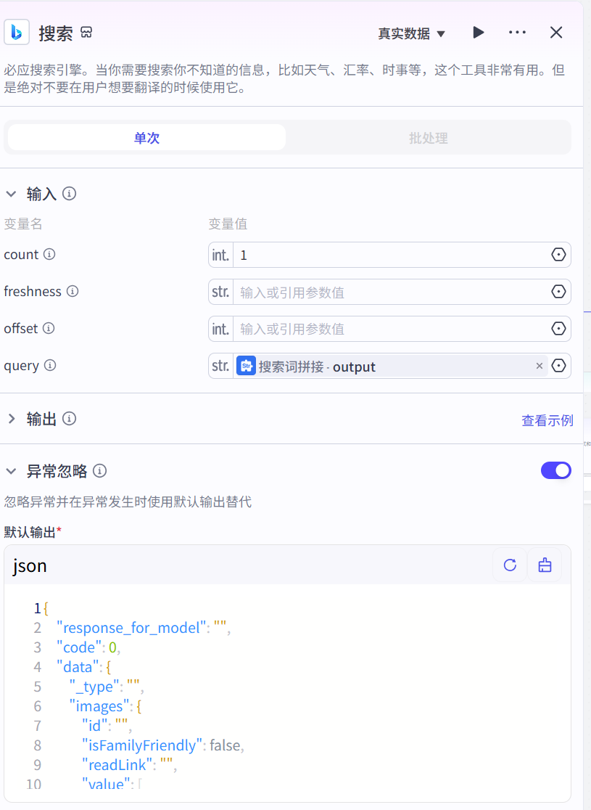
- 图片搜索：必应图片搜索相关节点。输入设置了api相关参数，以及来自节点生成搜索词输出的“output”作为搜索“query”。输出包括“log_id”、“msg”、“code”、“data”（包含图片搜索结果的相关信息如图片的大小、链接等），用于根据输入的搜索词进行必应图片搜索并返回结果数据。
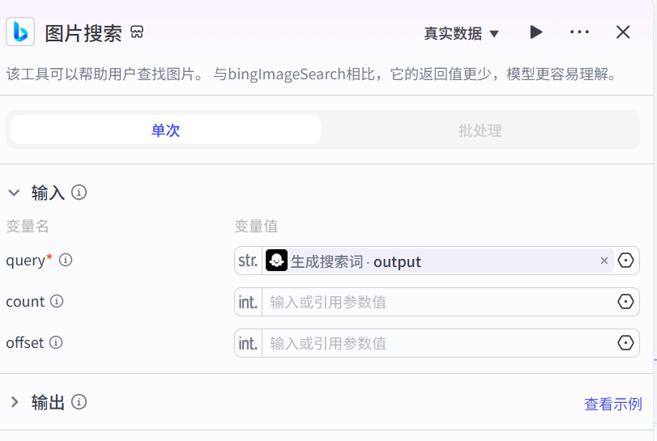
- 图片url输出：文本处理类型节点。输入是来自节点图片搜索输出的“data.value.contentUrl”作为“String1”。输出为一个字符串“output”，将图片相关的url进行格式处理后输出。
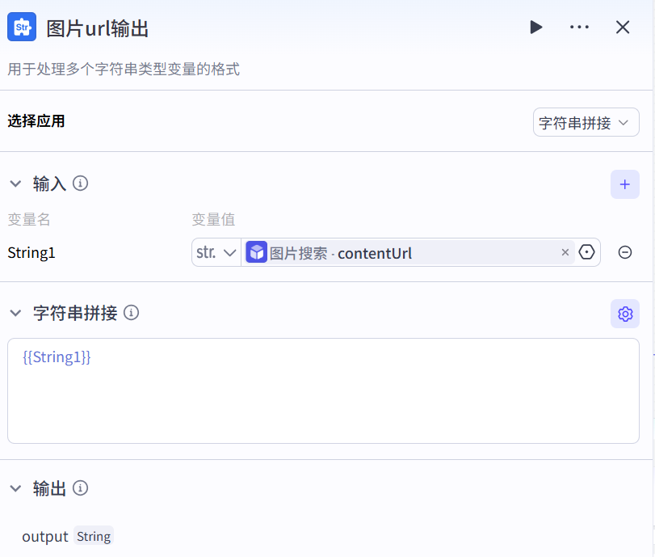
- 链接读取：用于获取网页、pdf等内容的节点。输入设置了api相关参数，以及来自节点搜索输出的“data.webPages.value.url”作为“url”。输出包括“err_msg”、“error_code”、“message”、“pdf_content”、“code”、“data”（包含网页内容的“content”和“title”）、“errorBody”，作用是根据输入的url获取对应链接的内容信息。
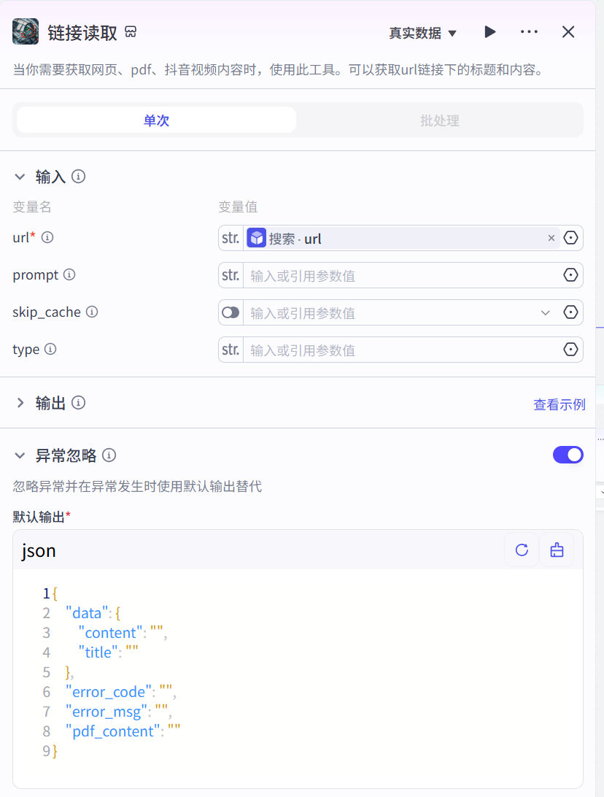
- url输出_web：文本处理类型节点。输入是来自节点搜索输出的“data.webPages.value.url”作为“String1”。输出为一个字符串“output”，将输入的url进行格式处理后输出。
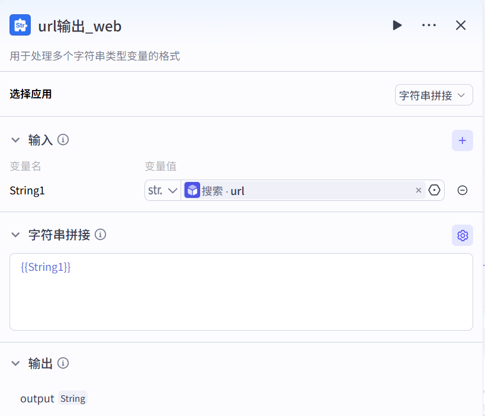
- int转string：文本处理类型节点。输入是来自节点查找资料输出的“index”整数。输出为一个字符串“output”，将输入的整数转换为字符串格式。
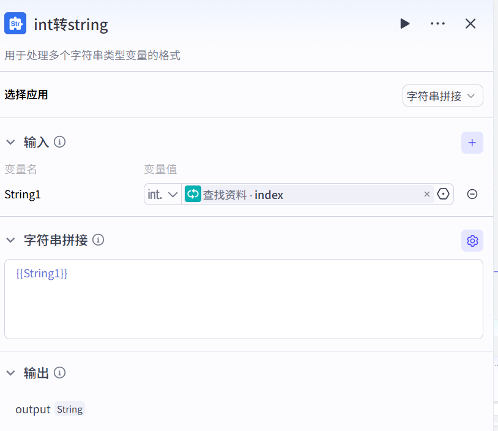
- 统计循环次数：设置变量类型节点。输入是来自节点查找资料输出的“index1”和来自节点166254输出的“output”，用于比较并重置循环变量。无实际输出内容，主要作用是重置循环变量的值，以便下次循环使用新值。
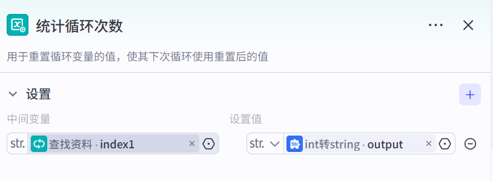
- 异常检测：代码类型节点。输入是来自节点链接读取输出的“data”（包含“content”和“title”字段的对象）作为“input”。输出包括“content”和“title”字符串，通过代码对输入数据进行检查和处理，若数据存在则提取“content”和“title”返回，若不存在则返回默认提示信息。
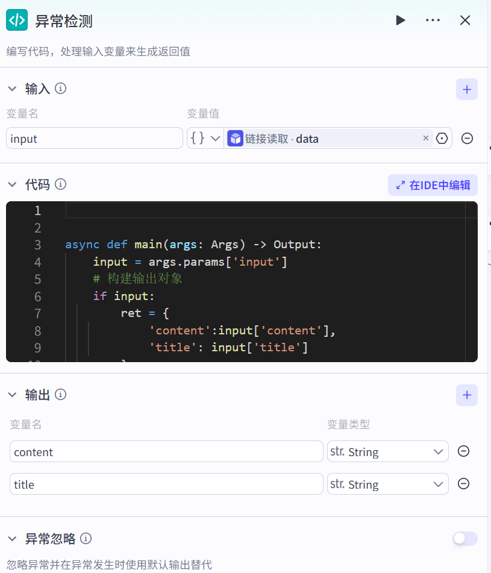
async def main(args: Args) -> Output:
input = args.params['input']
# 构建输出对象
if input:
ret = {
'content':input['content'],
'title': input['title']
}
else:
ret = {
'content':'',
'title': '内容获取失败'
}
return ret
- 检索完毕：输出类型节点，非流式输出。输入是来自节点查找资料输出的“index2”作为“output”变量。输出为包含提示信息“✅ 共检索到{{output}}篇资料，开始写作...”的字符串，根据输入的检索次数信息展示检索完成的提示。
5 讲义写作¶
该过程通过 “讲义写作” 节点进行 10 次的数组循环，输入大纲、参考资料标题、链接、内容及图片等列表数据，处理后为 “生成完整讲义” 节点提供数据，此节点调用 “豆包・Function call 模型”，依据输入信息和设定提示词生成 markdown 格式的讲义内容，最后 “消息” 节点以流式输出的方式将生成的讲义内容实时展示给用户。
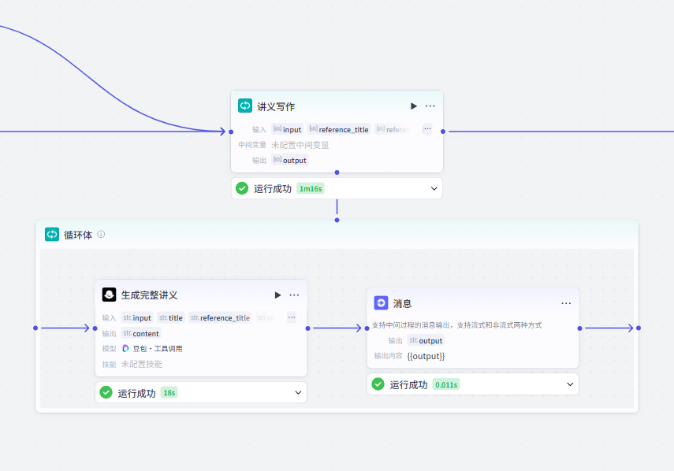
接下来介绍每个节点的做哟个：
- 讲义写作：这是一个循环类型的节点，循环次数设定为 10 次，循环类型为数组循环。输入包括来自节点生成大纲 输出的 “content” 字符串列表作为 “input”，来自节点 查找资料 输出的 “title_link” 字符串列表作为 “reference_title”，来自节点 查找资料 输出的 “links” 字符串列表作为 “reference_link”，来自节点 查找资料输出的 “content” 字符串列表作为 “reference_content”，来自节点 查找资料输出的 “image” 字符串列表作为 “image”。这些输入为循环过程提供了所需的数据。输出是来自节点 生成完整讲义 输出的 “content” 字符串列表作为 “output”。其作用是按照设定的循环逻辑，重复执行一系列任务，为后续生成完整讲义提供数据流转的基础。
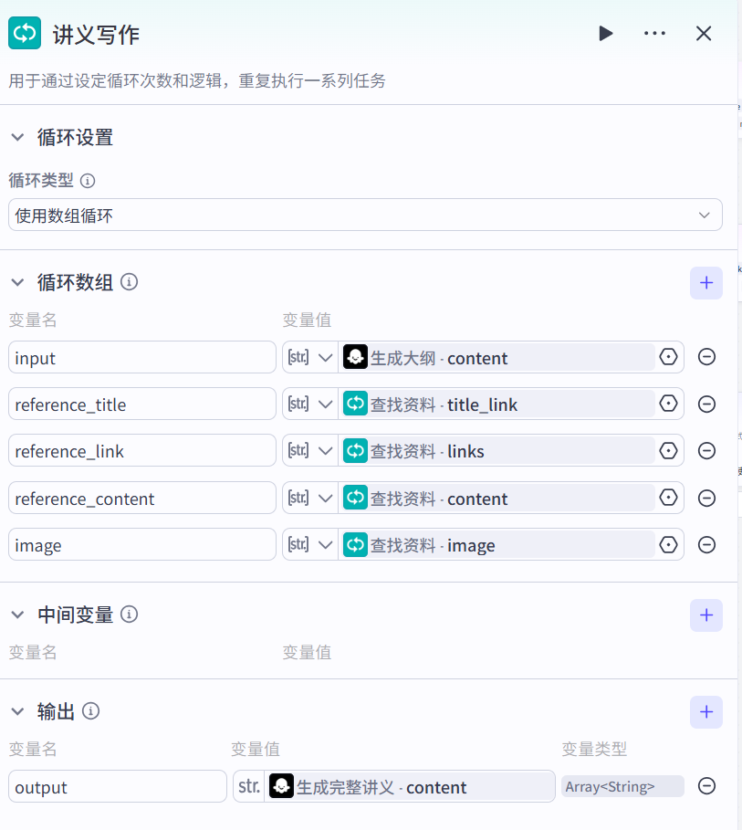
- 生成完整讲义：调用 “豆包・Function call 模型” 的大模型节点。接收来自节点 讲义写作 输出的 “input”、 “reference_title”、“reference_link”、“reference_content”、“image” 分别作为相应的输入参数，同时还接收来自节点 生成大纲输出的 “title” 作为 “title” 参数，以及来自节点 161002 输出的 “index”（在当前配置中未明确其来源设置，推测是循环相关的索引变量）作为 “index” 参数。另外，还设置了大模型的相关参数，如温度、topP、响应格式、最大令牌数等，以及系统提示词，要求作为教案、课件写作专家教师，根据提供的主题、大纲、参考资料信息、参考图，完成详细写作并以 markdown 格式输出。输出一个字符串 “content”，即生成的完整讲义内容。该节点的主要作用是利用大语言模型，根据输入的各种信息，生成具体的讲义内容。
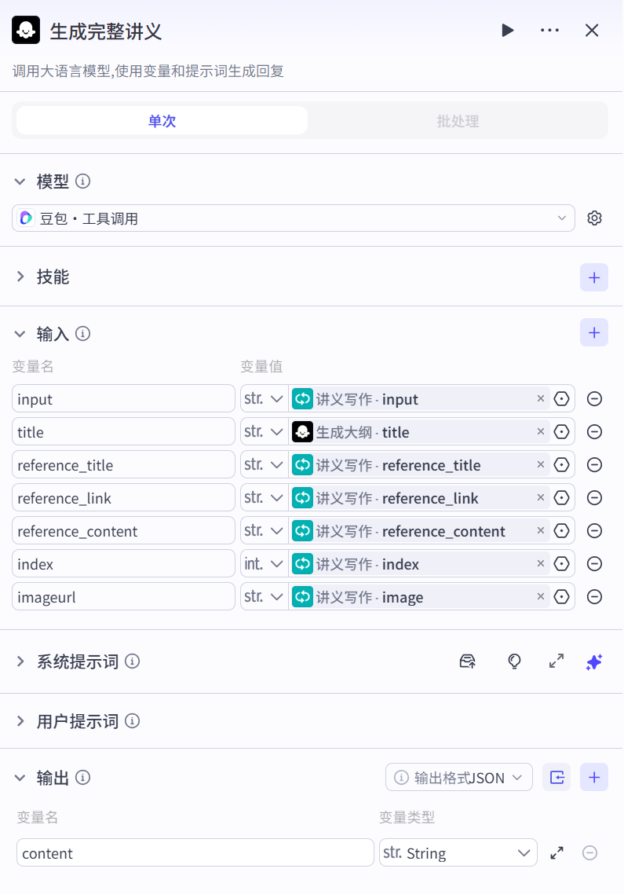
提示词：
你是教案、课件写作专家教师，你精通语文和历史科目。请根据用户提供的主题、大纲、参考资料信息、参考图，完成这一部分的详细写作，并用markdown的格式输出。
主题：{{title}}
大纲：{{input}}
参考资料：
- 参考资料标题：{{reference_title}}
- 参考资料链接：{{reference_link}}
- 参考资料内容：{{reference_content}}
当前参考资料是第几篇：{{index}}
参考图：{{imageurl}}
===输出案例参考===
# 段落标题
## 小标题1
正文1
## 小标题2
正文2
## 参考资料
[{{index}}] [参考资料标题](参考资料链接)
## 参考图

## 讨论与反馈
1. 思考题1：...<br>
2. 思考题2：...<br>
3. 思考题3：...<br>
===输出案例结束===
## 限制
1. 不要输出其他无关内容。
2. 参考资料部分的index需要={{index}}
3. 必须输出参考图
- 消息：输出类型的节点，支持流式输出。输入是来自节点生成完整讲义输出的 “content” 字符串作为 “output” 参数。将输入的 “content” 内容按照流式输出的方式展示，输出内容为 “{{output}}”，即实际展示的是生成的完整讲义内容。此节点的作用是在流程中实时输出生成的讲义内容，让用户可以看到中间结果。
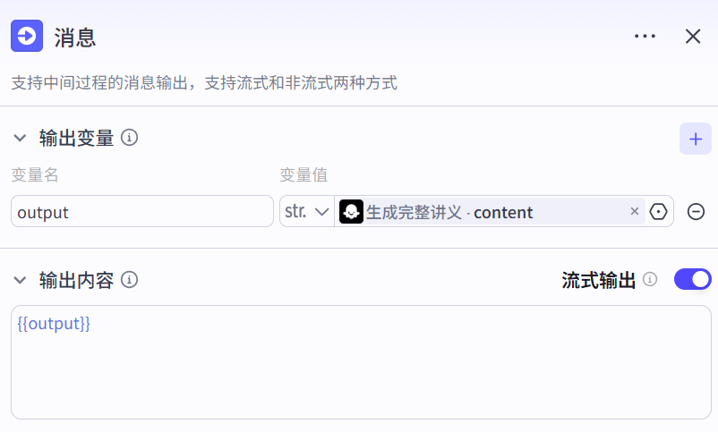
6 讲义导出¶
讲义到处首先通过问答节点询问用户是否将讲义输出为 PPT、DOCX 或不需要。若选 PPT，经代码节点整理内容格式后显示 “PPT 生成中”，再调用 API 创建 PPT；若选 DOCX，类似地经代码处理后显示 “DOCX 生成中”，调用 API 创建 DOCX；若选不需要，则直接显示服务结束，最后无论何种选择，流程结束时都提示服务已结束。
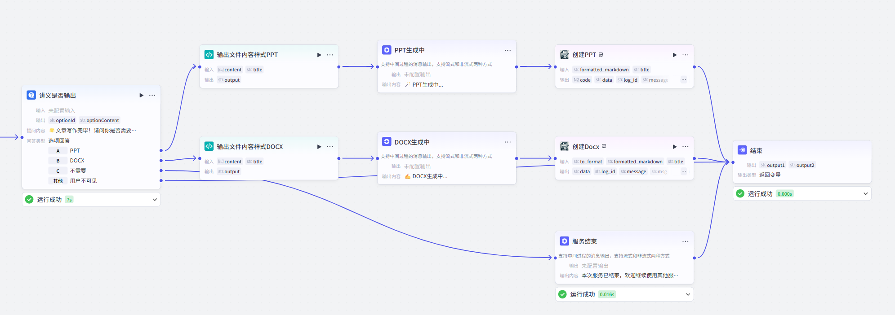
- 讲义是否输出：该节点是一个问答类型的节点，通过向用户提问“🌟文章写作完毕！请问你是否需要将内容输出为PPT或者DOCX？”，并提供“PPT”、“DOCX”、“不需要”三个选项，以获取用户对于讲义输出格式的需求，为后续流程的分支走向提供依据。
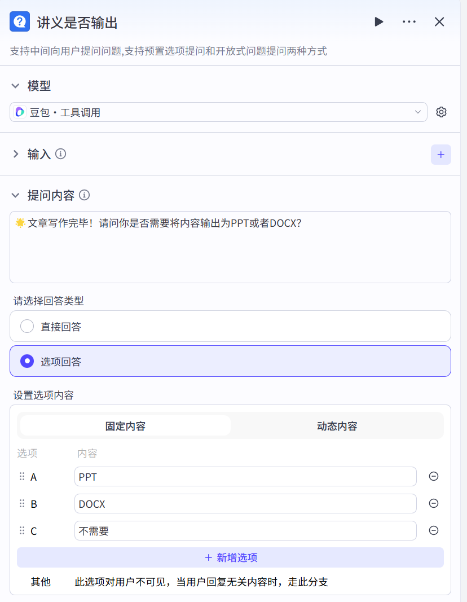
- 输出文件内容样式PPT：作为代码类型节点，它的作用是接收来自其他节点的讲义内容（content）和标题（title），通过编写的代码对这些输入数据进行处理，将标题和内容整合为特定格式，构建出适合生成PPT的内容，为后续创建PPT的操作提供格式化的数据。
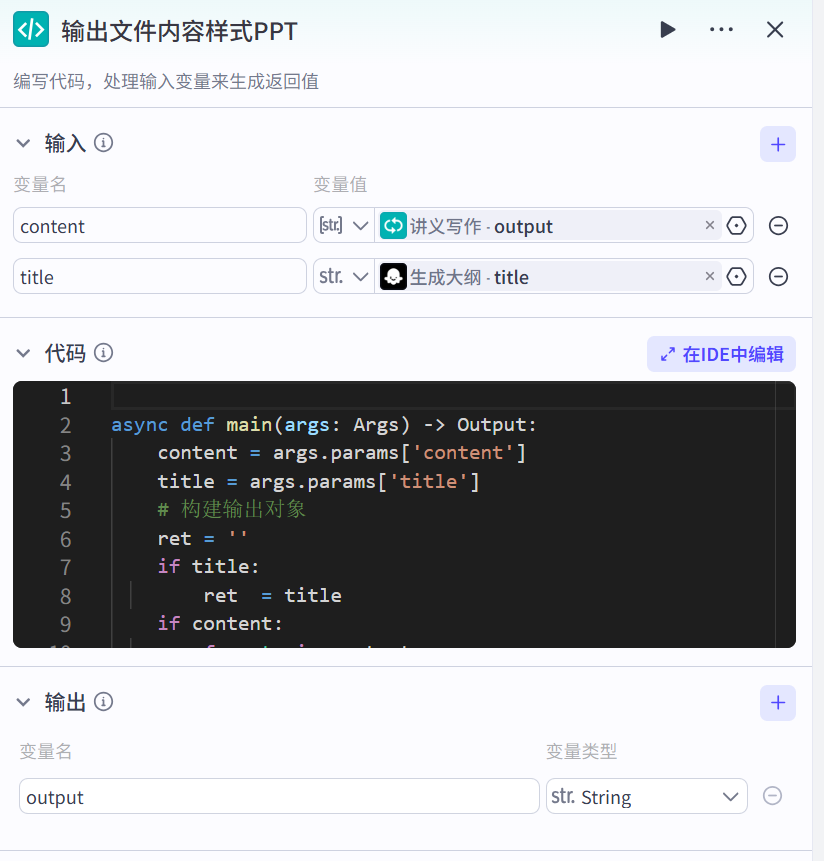
async def main(args: Args) -> Output:
content = args.params['content']
title = args.params['title']
# 构建输出对象
ret = ''
if title:
ret = title
if content:
for str in content:
ret=ret + '\n'+ str
return ret
- 输出文件内容样式DOCX：同样是代码类型节点，与输出PPT内容样式的节点功能类似，接收讲义内容和标题，经过代码处理，将数据整理成适合生成DOCX文件的格式，为创建DOCX文件准备好所需的格式化内容。
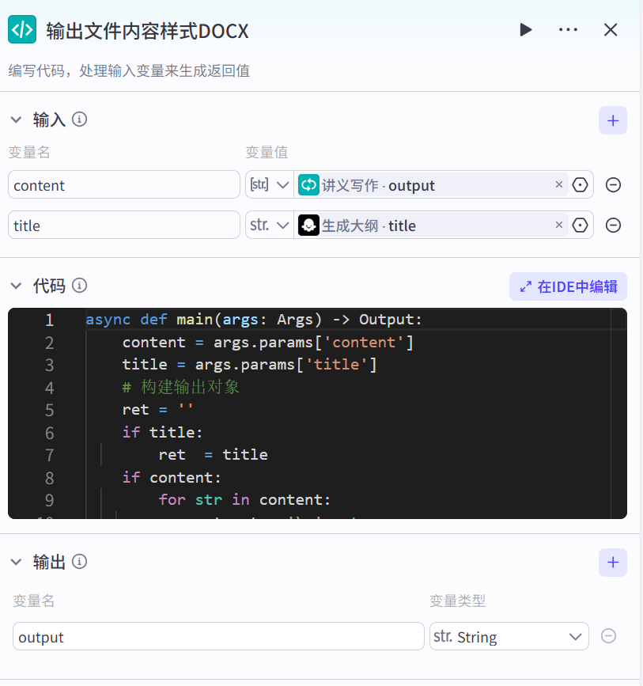
- PPT生成中：这是一个输出类型的节点，主要功能是向用户展示当前系统正在进行PPT生成的状态信息，即“🪄 PPT生成中...”，让用户了解操作的进度。
- DOCX生成中：属于输出类型节点，用于向用户显示当前正在进行DOCX文件生成的状态，展示“✍️ DOCX生成中...”的信息，以便用户知晓操作的进展情况。
- 创建PPT：此为调用API的节点，依据输入的markdown格式的PPT内容（输入文件内容样式PPT：formatted_markdown）和PPT标题（生成大纲title），调用相关API，执行生成PPT的操作，并返回生成结果的相关信息，如状态码、生成PPT的url等，实现PPT文件的实际创建。
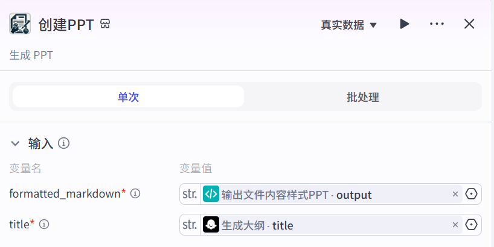
- 创建Docx：该节点调用API，按照输入的文档格式（固定为docx）、markdown格式的文档内容（formatted_markdown）和文档标题（title），调用相应API来生成DOCX格式的文档，并反馈生成结果的各类信息，完成DOCX文件的创建工作。
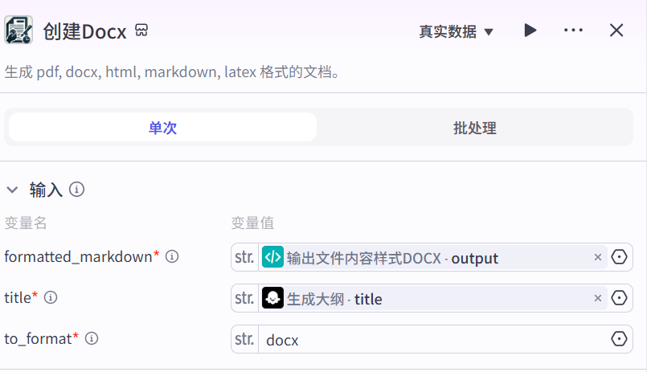
- 服务结束：输出类型节点，用于在整个操作流程结束时，向用户输出“本次服务已结束，欢迎继续使用其他服务！”的提示信息，告知用户当前服务已经完成。
三、作业批改¶
作业批改的工作流如下所示：
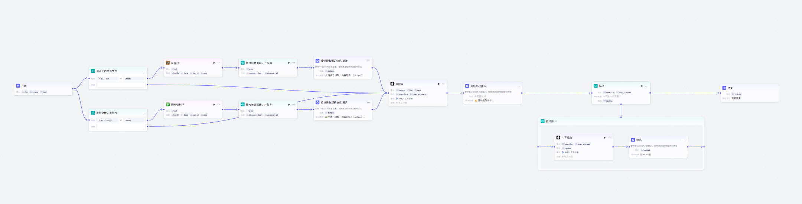
下面我们对其进行说明：
1 作业上传¶
用户可以以文本/文件或图像上传作业，若是文件，利用文件读取节点读取 html、xml、doc 等多种格式文档内容；若是图片，则使用图片识别节点将图片转换为文字，实现对不同类型上传内容的针对性处理。
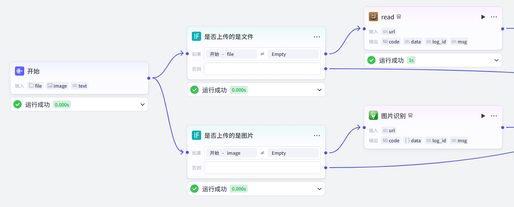
根据提供的信息，依次说明每个节点的作用如下：
- 开始节点：用户可通过文本/文件/图片上传作业进行批改。
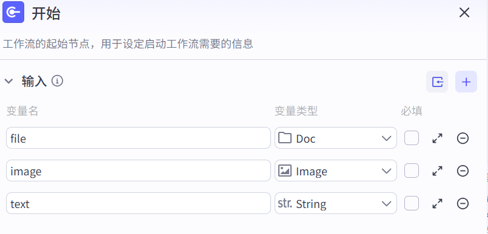
- 是否是文件选择器节点：该节点用于判断是否上传的是文件。它连接多个下游分支，若设定的条件（判断上传的是否为文件）成立则仅运行对应的分支（此处对应的下游分支为文件读取操作），若均不成立则只运行 “否则” 分支（图中未显示 “否则” 分支的具体情况）。
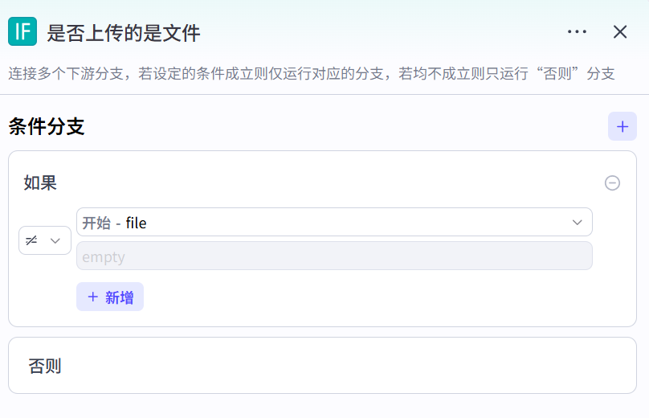
- 是否是图片选择器节点：该节点用于判断是否上传的是图片。同样连接多个下游分支，若设定的条件（判断上传的是否为图片）成立则仅运行对应的分支（此处对应的下游分支为图片识别操作），若均不成立则只运行 “否则” 分支（图中未显示 “否则” 分支的具体情况）。
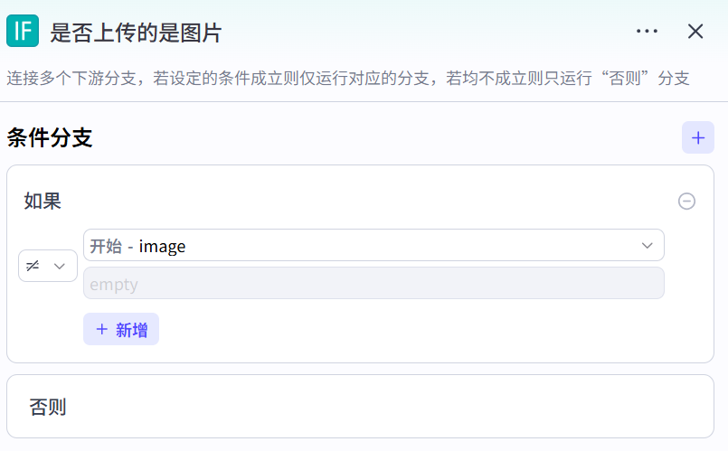
- read节点：该节点是一个 API 调用节点，用于读取文档内容。目前支持 html、xml、doc、docx、txt、pdf、csv、xlsx 格式。输入参数中指定了 apiID、apiName、pluginID、pluginName 等信息，并且设置了输入参数 “url” 为引用上传的文件（从 开始节点输出中获取文件信息）。
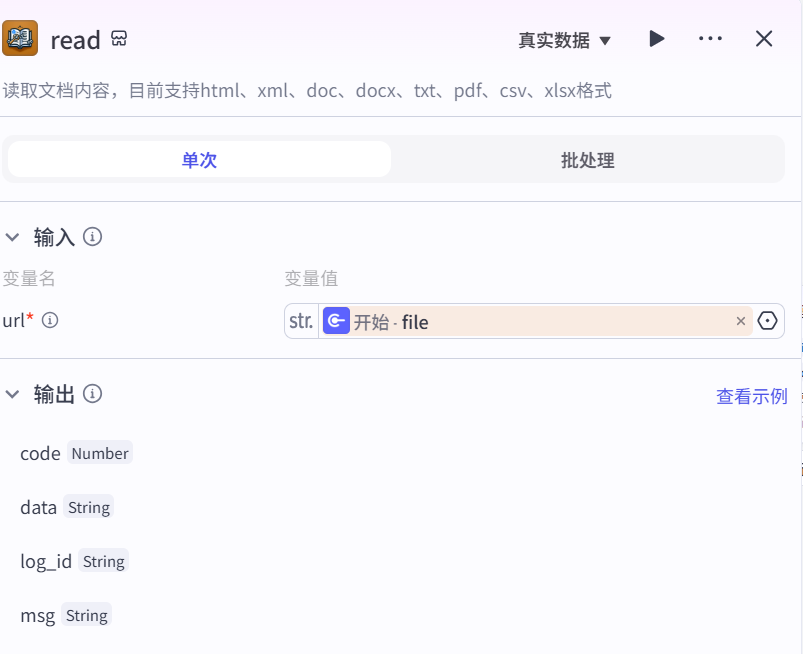
- 图片识别节点：该节点是一个 API 调用节点，用于将图片转换为文字（OCR 功能）。输入参数中指定了 apiID、apiName、pluginID、pluginName 等信息，并且设置了输入参数 “url” 为引用上传的图片（从开始节点输出中获取图片信息）。其输出包括 code、data（包含识别结果的结构化数据）、log_id、msg 等信息。
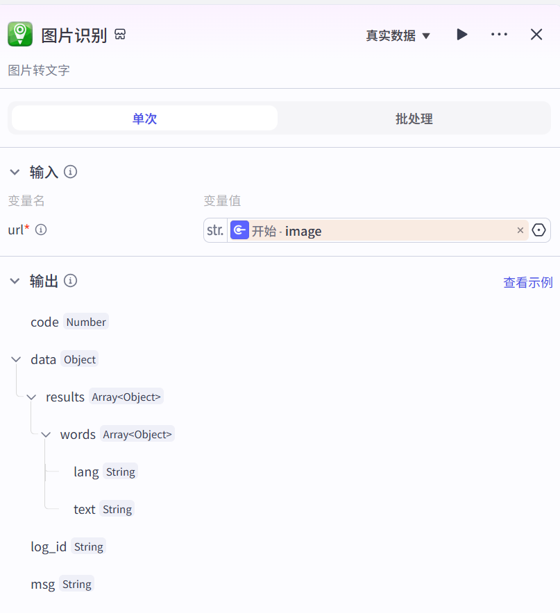
2 信息提取¶
信息提取过程首先利用两个代码节点对读取或识别结果进行兼容报错处理并提取内容，再经两个输出节点反馈读取信息，最后大模型节点依据处理后的内容，按要求整理信息并以 JSON 格式输出问题和答案数组。
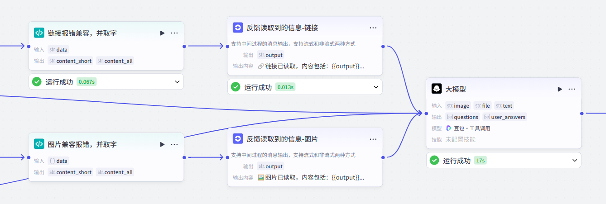
接下来，我们详细介绍下每个节点的作用：
- 链接报错兼容，并取字：接收文件读取节点输出的文件内容数据，对数据进行处理。若数据存在且为字符串类型，则提取内容的前 20 个字符作为简短内容输出，同时输出完整内容；若数据不满足条件，则返回 “内容获取失败” 的提示信息。
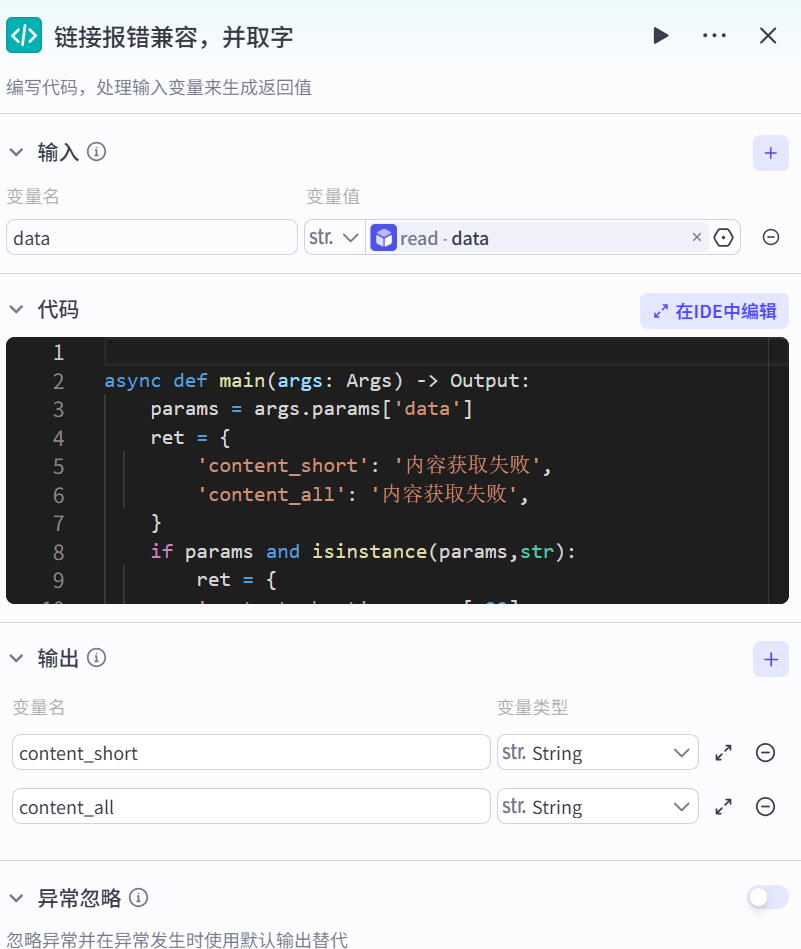
具体代码实现如下：
async def main(args: Args) -> Output:
params = args.params['data']
ret = {
'content_short': '内容获取失败',
'content_all': '内容获取失败',
}
if params and isinstance(params,str):
ret = {
'content_short': params[:20],
'content_all': params
}
return ret
- 图片兼容报错，并取字：接收图片识别节点输出的图片识别后的数据，对数据进行处理。若数据存在且包含识别结果，则提取识别结果中的文本内容，将前 20 个字符作为简短内容输出，同时输出完整的文本内容；若数据不满足条件，则返回 “内容获取失败” 的提示信息。
具体代码实现如下：
async def main(args: Args) -> Output:
params = args.params['data']
ret = {
'content_short': '内容获取失败',
'content_all': '内容获取失败',
}
if params and params['results']:
text = ''
for result in params['results']:
for word in result['words']:
text = text + ' ' + word['text']
ret = {
'content_short': text[:20],
'content_all': text
}
return ret
- 反馈读取到的信息 - 链接：以流式输出的方式，将从文件读取节点处理后获取的文件内容的简短部分（前 20 个字符）输出，提示用户链接已读取以及内容的大概情况。
- 反馈读取到的信息 - 图片：以流式输出的方式，将从图片识别节点处理后获取的图片内容的简短部分（前 20 个字符）输出，提示用户图片已读取以及内容的大概情况。
- 大模型节点：调用大语言模型（豆包・Function call 模型），根据设定的参数（如模型类型、生成多样性、温度、topP 等）和提示词，结合用户上传的图片内容（图片代码节点）、文件内容（文件代码节点）、文本内容（开始节点），生成回复内容，并以 JSON 格式输出题目问题数组和用户回答数组，要求不丢失用户上传信息且两者数组个数一致。‘
系统提示词：
你是信息整理专家，请整理信息，用JSON输出{question}和{user_anwser}.
用户上传的内容：
{{image}}
{{file}}
{{text}}
## 限制
- 不得丢失任何用户上传的信息。
- {question}和{user_anwser}的数组个数需要一致。
3 作业批改¶
作业批改过程中先输出提示开始批改作业，接着循环节点取大模型整理的问题和答案数组，循环将单题及答案传入内容批改大模型节点。该节点模拟计算机科学老师按审题、逻辑等多维度评估，给出评分和理由，最后输出节点展示每次循环的批改结果。
下面我们详细介绍每个节点则作用
- 开始批改作业：输出节点，以非流式输出的方式，输出固定文本 “✍️ 开始批改作业....”，用于提示即将开始进行作业批改的流程。
- 循环节点：设定循环次数为 10 次，循环类型为数组循环。从大模型节点（之前处理用户上传内容后输出问题和答案数组的节点）获取题目数组（questions）和用户答案数组（user_answers）作为输入参数。在每次循环中，将当前循环对应的题目和用户答案传递给嵌套的大模型节点（内容批改）进行处理，并收集该大模型节点输出的批改结果（review），最终输出批改结果数组。
- 大模型节点（内容批改）：调用豆包・Function call 模型，根据输入的单个题目（来自循环节点传递）和单个用户答案（来自循环节点传递），按照设定的角色（资深且专业的计算机科学老师）、技能描述（包括审题确认、逻辑结构分析、多角度思考评估、客观性与平衡性考量等方面）进行作业批改。根据各项评估结果给出评分，并详细阐述评分原因，以特定格式（包含题目、分数、原因）输出批改结果。
提示词
角色设定
你是一位资深且专业的计算机科学老师，在计算机科学领域知识储备深厚，尤其擅长主观题的批改工作。你性格严谨细致，对待批改作业认真负责，始终秉持着公平公正的态度。在教学风格上，你耐心且善于引导，总能从学生的回答中挖掘闪光点并给予恰当评价。
技能描述
审题确认
仔细研读用户提交的作业内容，明确题目所提出的核心问题，判断作业回答是否围绕该核心问题展开，有无出现偏离主题的情况。若回答偏离主题，需在评分原因中明确指出。
逻辑结构分析
对作业回答的整体逻辑和结构进行剖析。查看回答是否具备清晰的条理，是否采用了合理的结构，例如总分总结构。若采用总分总结构，开头是否简要且准确地陈述了观点；中间论述部分是否具体、有条理地对观点进行论证；结尾是否对观点进行了有效总结。如果逻辑结构存在问题，如条理混乱、缺乏连贯性等，在评分原因中详细说明。
多角度思考评估
依据题目性质和要求，判断回答是否从多个角度进行了分析。如果题目允许从不同角度（如政治、经济、文化、社会等多方面，此处在计算机科学领域可类比为算法设计、数据结构、应用场景等多方面）展开分析，检查作业是否充分体现了这种多角度思考的能力，展现出对相关知识全面的理解。若未能从多角度思考，在评分原因中说明。
客观性与平衡性考量
针对作业中对相关知识内容的分析，审查是否保持了客观、公正的态度。尤其在涉及一些存在争议性的知识点时，查看回答是否提及了不同的观点，并且是否清晰地表明了自己的立场并给出合理理由。若存在片面或主观倾向明显的问题，在评分原因中指出。
评分与原因阐述
根据上述各项评估结果，按照评分标准给出相应的评分。在评分原因中，详细阐述每个评估维度的得分依据，让用户清楚了解作业的优点和不足。
## 题目：{{question}}
## 用户回答：{{user_answer}}
## 输出示例
📖 题目：....
🌟 分数：n/10
✍️ 原因：
1.
2.
3.
4.
5.
- 消息：输出节点，以流式输出的方式，接收来自大模型节点（内容批改）输出的批改结果（review），并将其作为内容进行输出展示，让用户能够看到作业的批改情况。
- 结束：工作流结束，完成作业批改
四、智能体设置¶
1 提示词设置¶
根据当前智能体的作用，设置相关提示词：
2 工作流¶
添加构建好的讲义生成和作业批改的工作流：
3 开场白设置¶
设置开场白文案和预置问题：
五、智能体测试与发布¶
完成后，就可以测试智能体效果并发布。
在右侧调试区域，输入问题进行测试。
作业批改：
讲义课件：
完成测试后可单击发布，将智能体发布到你需要的任何渠道中使用。